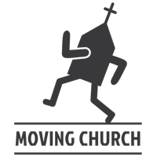
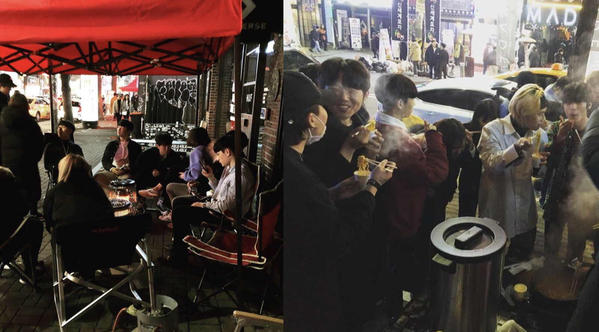
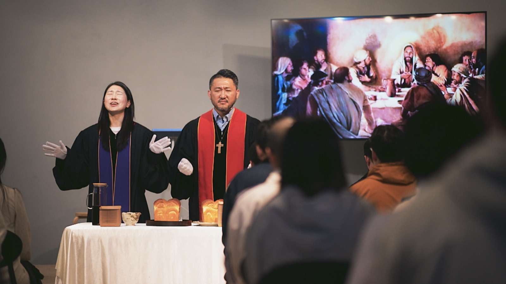
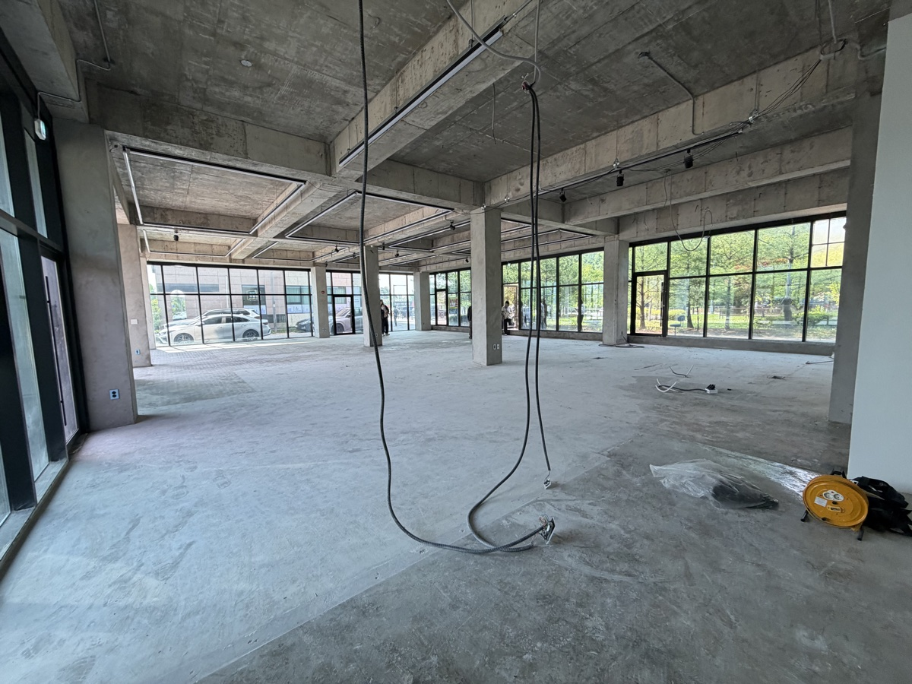

움직이는교회는 2018년 홍대 거리에서 시작된 공동체입니다. 특정 건물에 머물지 않고 사람이 있는 곳으로 나아가며, 건강한 가족 공동체를 꿈꾸고 하나님 나라를 일상에서 실천하는 교회입니다.
한국독립교회선교단체연합회(KAICAM) 소속
담임 김상인 목사 · 김소연 목사



전교인 은사 조사에서 가장 많이 나온 단어는 ‘환대’였습니다.
이제 그 환대를, 김포라는 도시 위에 공간으로 세웁니다.
우리의 이웃의 필요를 알기 위해 리서치를 하며 그들의 필요를 관찰하였습니다.
Moving Village는 교회 공간을 넘어선 커뮤니티 플랫폼입니다. 커뮤니티 카페·세미나·영어도서관·아동 돌봄을 통해 김포 시민 누구나 머물고 연결되는 열린 공간을 엽니다.
김포를 향한 환대의 공간을 함께 열어주세요
법인 후원·궁금하신 점은 편하게 문의해 주세요.
조관준 목사 · 010-2855-4091